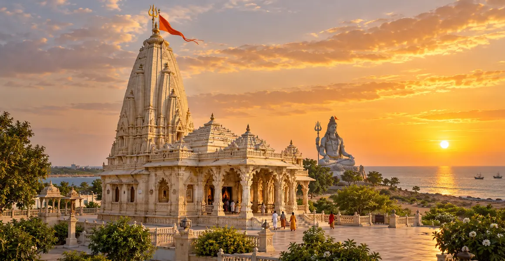

नागेश्वर ज्योतिर्लिंग
नागेश्वर की पवित्र कथा, मंदिर-परंपरा, इतिहास, यात्रा, पूजा और जीवनोपयोगी आध्यात्मिक संदेश की विस्तृत मार्गदर्शिका।
इस मार्गदर्शिका के प्रमुख विषय
पवित्र परिचय
नागेश्वर में शिव नागों के अधिपति और विष, भय तथा बंधन पर विजय के प्रतीक रूप में स्मरण किए जाते हैं। गुजरात की द्वारका-परंपरा में स्थित यह मंदिर समुद्री भूगोल और कृष्ण-तीर्थ के व्यापक यात्रा-पथ से भी जुड़ता है।
मुख्य पवित्र कथा
दारुकावन की कथा में सुप्रिया नामक भक्त, बंदी बनाए गए लोगों की प्रार्थना और शिव के रक्षक रूप का वर्णन मिलता है। “दारुकावन” की भौगोलिक पहचान पर विभिन्न परंपराएँ हैं; गुजरात के नागेश्वर को प्रतिष्ठित परंपरा के रूप में प्रस्तुत करते हुए अन्य दावों का अपमान नहीं करना चाहिए।
पवित्र भूगोल और मंदिर
मंदिर का आधुनिक परिसर, विशाल शिव प्रतिमा और खुला तटीय वातावरण इसे सहज पहचान देते हैं। द्वारका से आने वाले यात्री सड़क की वर्तमान स्थिति, स्थानीय परिवहन और मंदिर समय की पुष्टि करें। तेज धूप और हवा के लिए पानी तथा उपयुक्त वस्त्र रखें।
यात्रा और आध्यात्मिक संदेश
नागेश्वर का संदेश है कि भीतर का विष—क्रोध, ईर्ष्या और भय—दमन से नहीं, सजगता और शिवस्मरण से रूपांतरित होता है। सामूहिक प्रार्थना संकट में साहस देती है, पर विवेकपूर्ण कर्म और दूसरों की सहायता भी उतने ही आवश्यक हैं।
पूजा और उत्सव
दैनिक पूजा, आरती, अभिषेक और पर्व स्थानीय मंदिर-परंपरा के अनुसार होते हैं। महाशिवरात्रि, श्रावण और सोमवार को विशेष भीड़ हो सकती है। दर्शन को केवल बाहरी उपलब्धि न बनाकर शुचिता, धैर्य और सेवा से जोड़ें।
इतिहास को समझने की सावधानी
तीर्थ की प्राचीन पवित्रता, पुराण-कथा, क्षेत्रीय लोकस्मृति और वर्तमान भवन का इतिहास एक ही वस्तु नहीं हैं। जहाँ तिथि या संरक्षण का प्रश्न हो, अभिलेख, पुरातत्त्व और सरकारी स्रोत को प्राथमिकता देना उचित है।
उत्तरदायी यात्रा
गुजरात में द्वारका और बेट द्वारका मार्ग का प्रतिष्ठित तीर्थ की यात्रा से पहले आधिकारिक मंदिर या सरकारी पोर्टल पर दर्शन, मार्ग, मौसम, बुकिंग और सुरक्षा-नियम जाँचें। पहचान-पत्र रखें, अनधिकृत एजेंटों से बचें, स्थानीय संस्कृति का सम्मान करें और कचरा न छोड़ें। यह व्यावहारिक सूचना सितंबर 2026 में समीक्षा की गई है।
साधना में धारण करने योग्य संदेश
नागेश्वर की यात्रा का फल तभी स्थायी होता है जब श्रद्धा व्यवहार में उतरे—सत्य, संयम, करुणा, न्याय और प्रकृति के प्रति उत्तरदायित्व के रूप में। ज्योतिर्लिंग का बाहरी प्रकाश साधक को भीतर विवेक का दीप जलाने के लिए प्रेरित करता है।
यात्रा से पहले सत्यापन आवश्यक
मंदिर के समय, बुकिंग, पहुँच, मौसम और सुरक्षा-नियम बदल सकते हैं। यात्रा से ठीक पहले केवल आधिकारिक मंदिर, ट्रस्ट या सरकारी पोर्टल की नवीनतम सूचना देखें।
अक्सर पूछे जाने वाले प्रश्न
नागेश्वर कहाँ स्थित है?
यह गुजरात में द्वारका और बेट द्वारका मार्ग का प्रतिष्ठित तीर्थ में स्थित है।
नागेश्वर यात्रा से पहले क्या जाँचना चाहिए?
दर्शन-समय, मौसम, यात्रा-मार्ग, अधिकृत बुकिंग और मंदिर के वर्तमान नियम जाँचें।
क्या पवित्र कथा और इतिहास एक ही हैं?
नहीं। पवित्र कथा श्रद्धेय धार्मिक परंपरा है; ऐतिहासिक तिथियों के लिए अभिलेख और पुरातात्त्विक स्रोत देखे जाते हैं।
क्या सभी ज्योतिर्लिंग समान रूप से पूजनीय हैं?
हाँ। पारंपरिक क्रम यात्रा और स्मरण की व्यवस्था है; वह किसी ज्योतिर्लिंग को आध्यात्मिक रूप से कम नहीं करता।